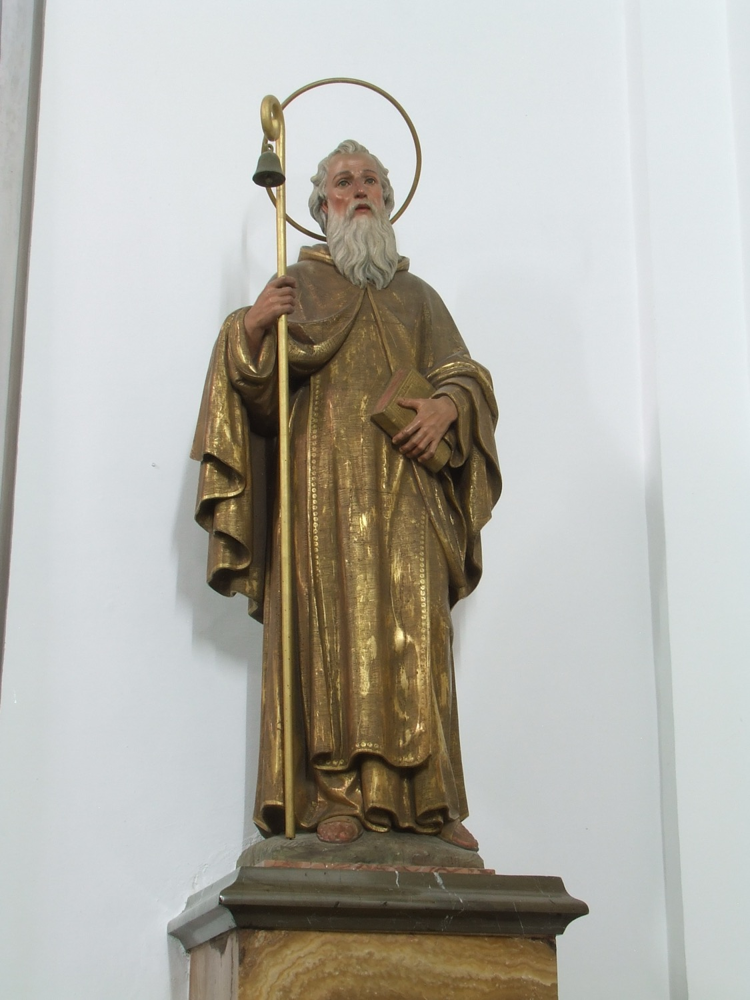

San Antonio Abad (251–356) fue un monje egipcio. Es conocido también como san Antonio de Viana, nombre que deriva de Vienne, en Francia, donde se fundó en la edad media bajo su patronaje la Orden de los Canónigos Regulares de San Antonio, o antonianos; en Mallorca es también popularmente conocido como *sant Antoni dels Ases*. Hijo de una familia rica, al morir sus padres repartió toda su herencia entre los pobres y se retiró a vivir en el desierto. Es famoso por sus luchas contra el diablo y sus tentaciones. Fue el fundador del movimiento de los anacoretas y el padre espiritual del monaquismo cristiano, por lo que es calificado como abad, aunque no lo fue de ningún monasterio.
En esta escultura, obra de Guillermo Galmés, de 1924, se le representa como un anciano con un libro en la mano, símbolo de sabiduría espiritual y de la Palabra de Dios, y un bastón de ermitaño del que cuelga una campanilla. La campanilla refiere a su relación con los monjes antonianos, que identificaban con campanillas a los cerdos que criaban para obtener la grasa con la que curaban el “fuego de san Antonio”, una intoxicación alimentaria provocada por el consumo de centeno contaminado por un hongo parásito.